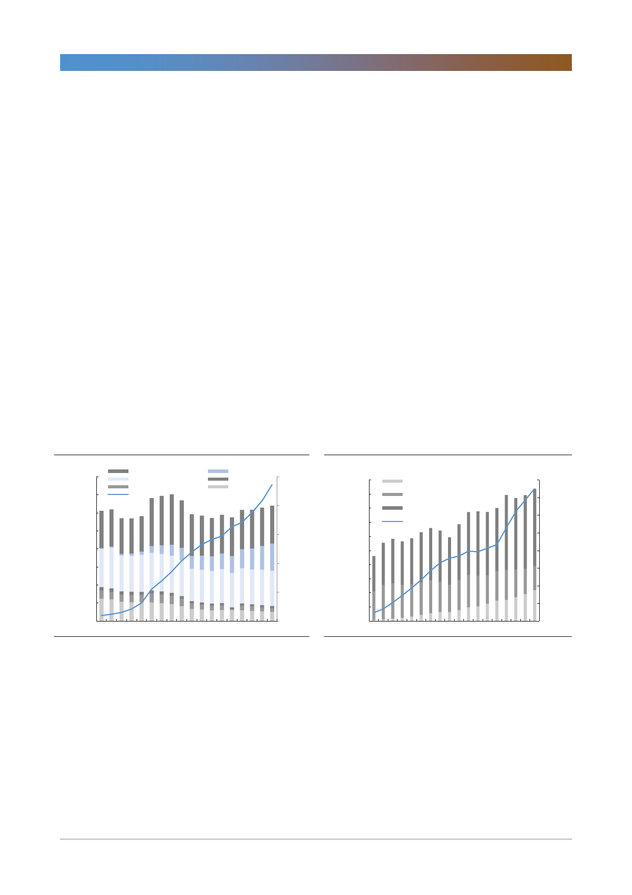

NAVER(035420)
고 있으며 라인 또한 6월에 진행한 마케팅을 통해 상당한 수의 추가 이용자를 확
보할 수 있었던 것으로 판단된다. 특히 추가 이용자의 재방문율(retention ratio)
이 70% 수준으로 높아 장기적으로 마케팅을 꾸준히 집행해 나갈 경우 일본 시장
에서 의미있는 시장점유율을 확보해 나갈 가능성이 높아졌다. 또한 NTT
Docomo와 Merpay를 통해 Mobile payment alliance를 구축, 이를 통해 각자의
가맹점을 공유함으로써 간편결제의 저변을 넓히고자 하는 노력 또한 진행하고 있
다. 핀테크의 기본인 간편결제의 저변이 넓어지고 있는 가운데 라인은 라인 내에
서의 데이터를 분석함으로써 개인의 신용도를 분석하는 ‘LINE Score’를 출시하
였으며 2019년에는 라인 증권, 2020~2021년에는 라인 뱅크 등 본격적인 핀테
크 서비스들을 출시해 나갈 예정이다.
대기만성, 느린 만큼 가능성도 큰 일본시장
일본에 대해서 막연하게 보수적이고 오프라인을 중심으로 한 생활양식이 쉽게 변
하지 않을 것이라는 선입견이 존재하지만, 2018년 일본 정부의 Cashless vision
발표 이후 대기업들의 노력이 더해지며 서서히 일본 사회가 변화해가고 있다고
판단한다. 또한 대부분 산업의 시장규모가 국내보다 크며 여전히 온라인 비중이
낮은 국가 특성상 장기적으로 인터넷 기업들에게는 다양하고 큰 기회가 있다. 장
기적인 변화라고 하는 관점에서 서서히 네이버에 대한 관심이 필요한 시기이며
가격대 또한 부담이 없는 시기라고 판단한다.
[그림 1] 일본 인터넷 광고의 비중은 약 23.6% 수준
(십억엔)
8,000
7,000
6,000
프로모션(좌)
TV(좌)
잡지(좌)
인터넷광고 M/S(우)
(%)
인터넷(좌)
라디오(좌)
25
신문(좌)
20
5,000
15
4,000
3,000
10
2,000
5
1,000
0
0
2000 2002 2004 2006 2008 2010 2012 2014 2016
자료: Dentsu, 한국투자증권
[그림 2] 한국에서는 약 37.5% 수준
(십억원)
20,000
18,000
16,000
14,000
12,000
10,000
인터넷(좌)
4대매체(좌)
기타(좌)
인터넷광고 M/S(우)
(%)
40.0
35.0
30.0
25.0
20.0
8,000
6,000
4,000
2,000
0
2001 2003 2005 2007 2009 2011 2013 2015 2017
15.0
10.0
5.0
0.0
자료: 제일기획, 한국투자증권
2